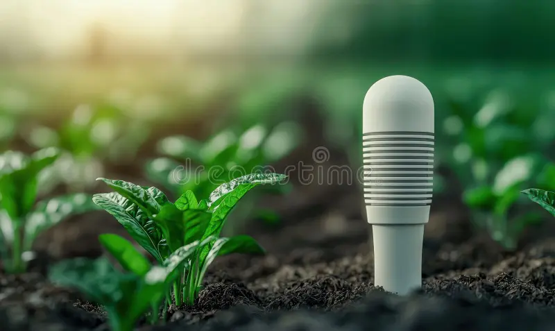
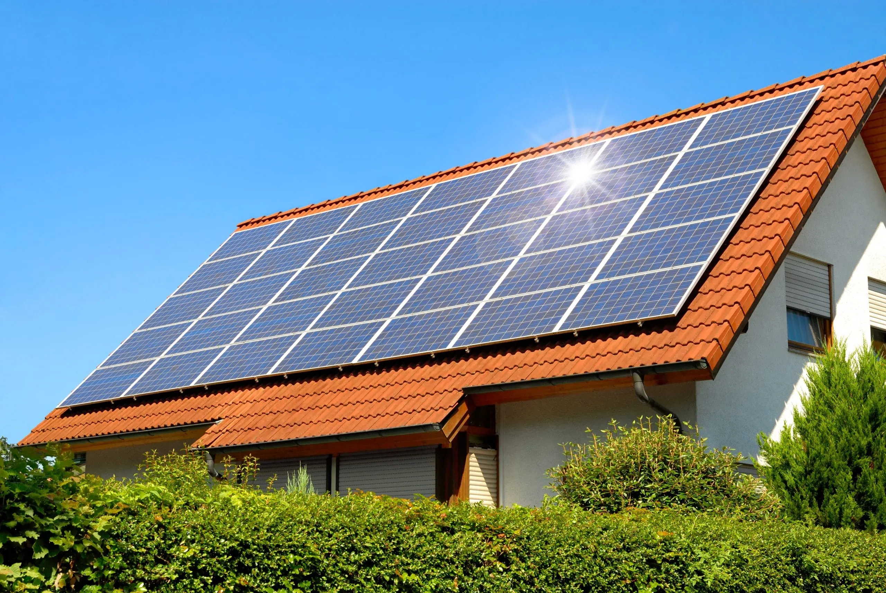
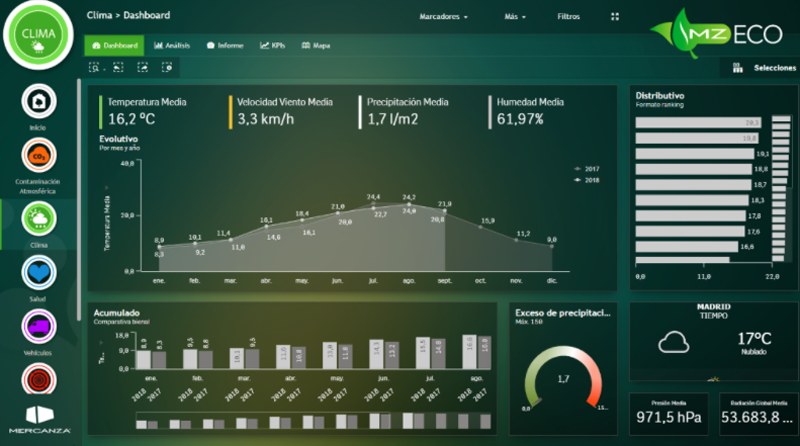

FOREST PROJECT
Sensores inteligentes para medir temperatura, humedad, consumo energético y emisiones.
Sistemas de riego automatizado y control del consumo hídrico mediante sensores.

Realizamos un diagnóstico exhaustivo de la situación energética de su instalación para identificar ineficiencias y puntos críticos de pérdida de energía
Software para medir, analizar y reducir emisiones de Gases de Efecto Invernadero en empresas.
Implementación de sistemas inteligentes que permiten medir en tiempo real variables ambientales como consumo energético, emisiones, temperatura y humedad.
Estos sistemas facilitan la detección de ineficiencias y la aplicación de medidas correctoras tanto en empresas como en instalaciones públicas.
Aplicación práctica: empresas, viveros, centros educativos y entornos rurales.